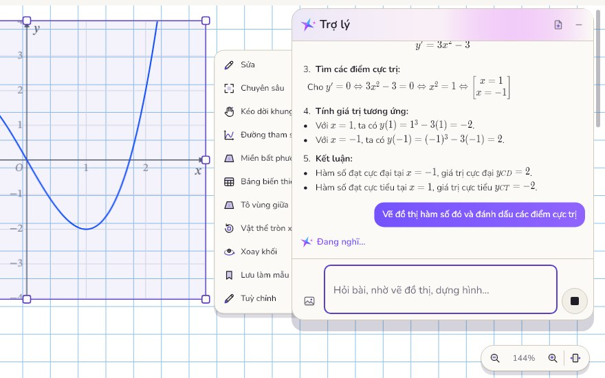
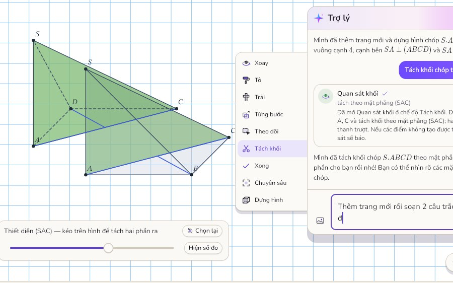
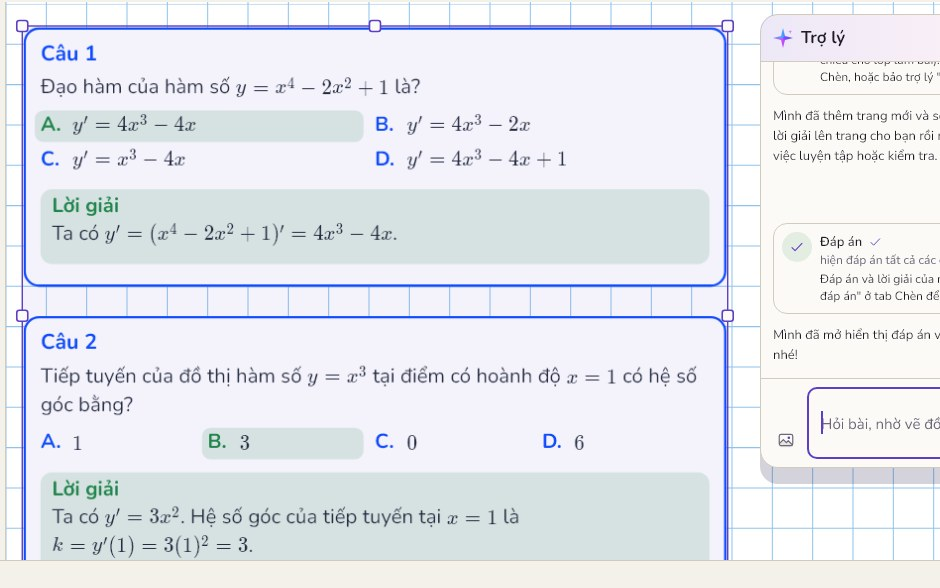

Trợ lý AI: nói là làm
Gõ như nhắn tin. Trợ lý giải bài từng bước, vẽ đồ thị, dựng và tách khối, soạn đề có đáp án, thêm trang, đổi bút. Mọi thứ đặt lên trang đều sửa tiếp và Hoàn tác được. Dùng chung khoá Gemini miễn phí với Quét đề.


